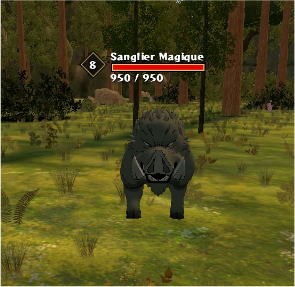
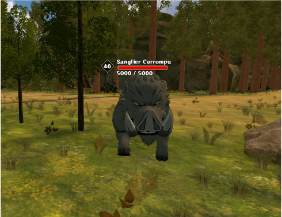
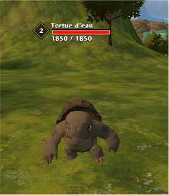
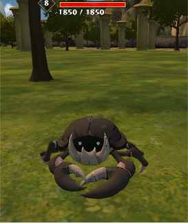
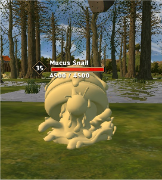
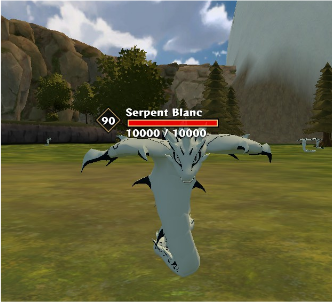
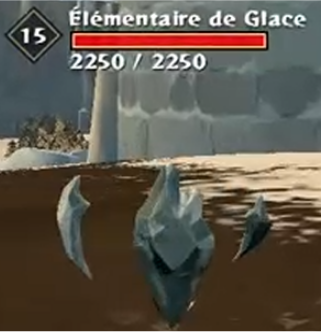
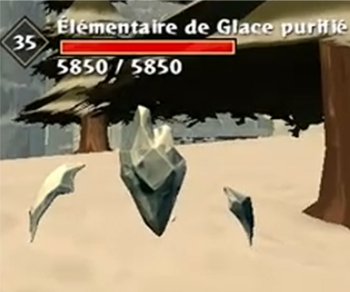
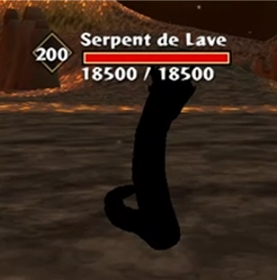
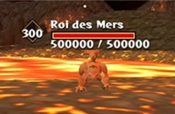

Niv. 8

Sanglier magique
Niveau8
Points de vie950
Groupe×5
MenaceFaible
Marécage, à droite près de la mine
Attaques physiques
Ce registre répertorie l'ensemble des créatures rencontrées à travers le Royaume de Clover : leur localisation, leur niveau de dangerosité, leur comportement et leurs capacités. Un outil de prévention pour préparer chaque expédition et protéger les équipes sur le terrain.









